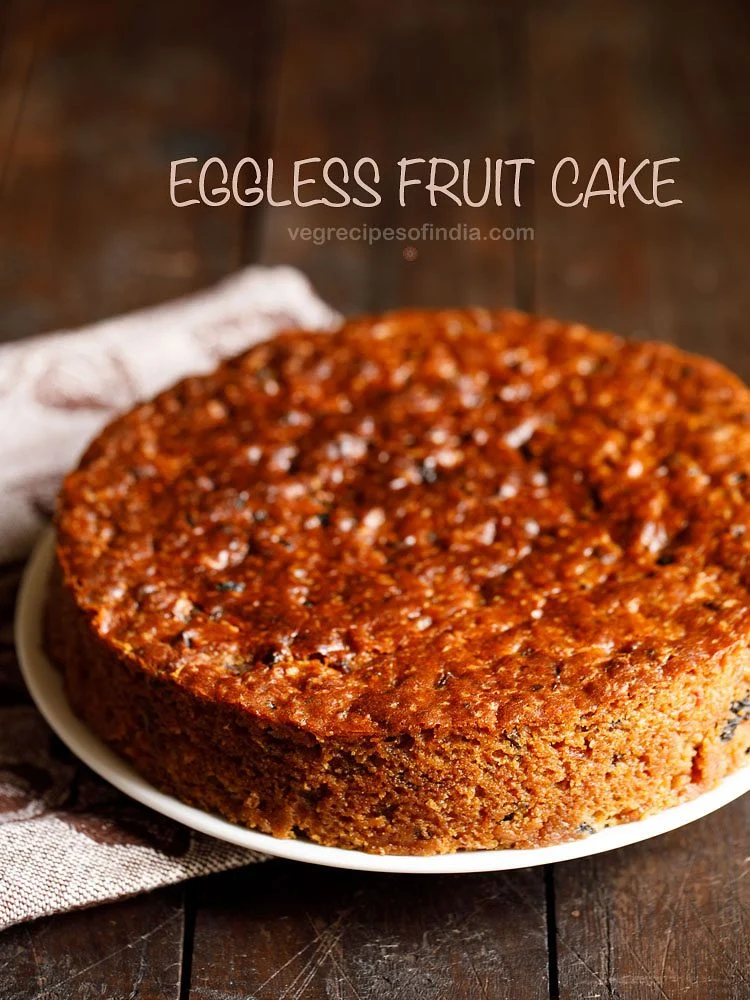
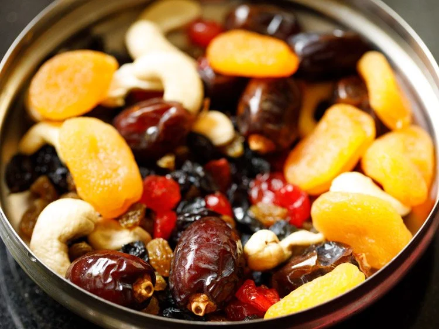
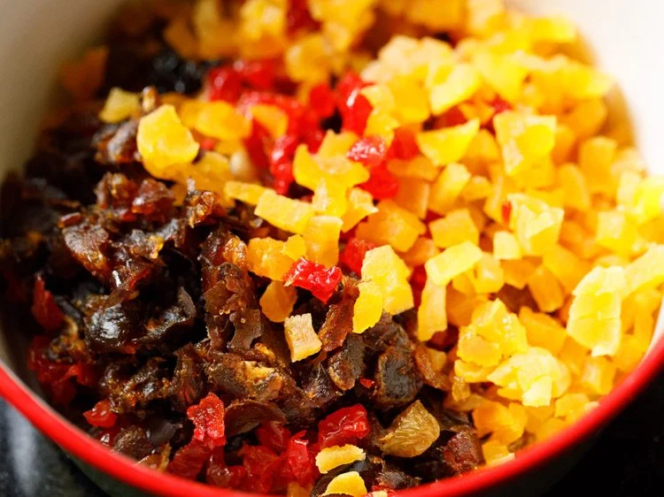
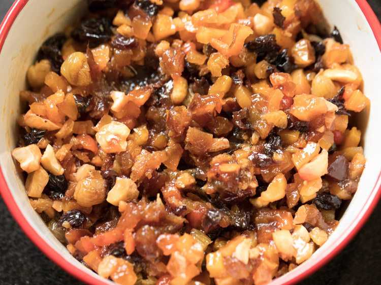
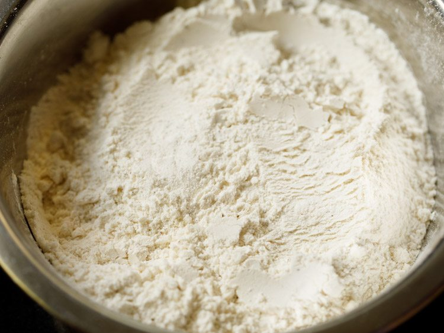
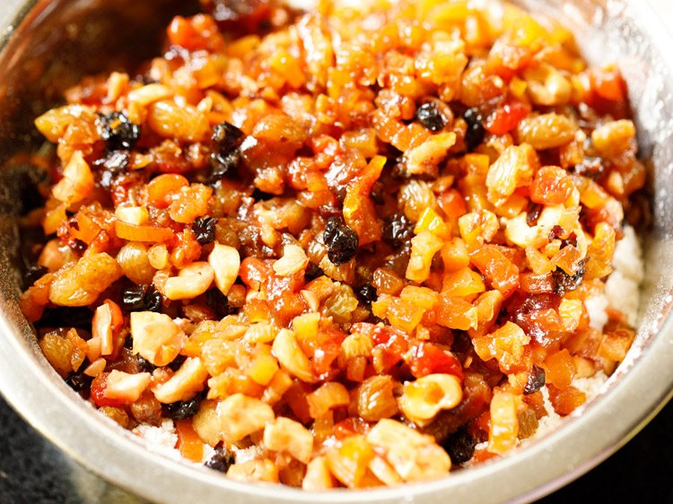
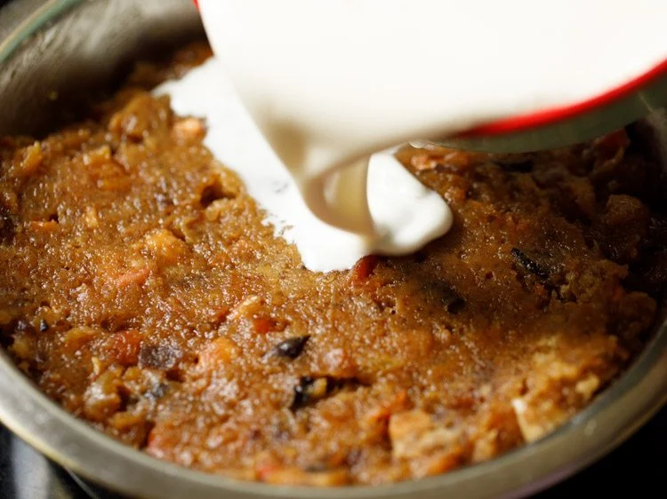
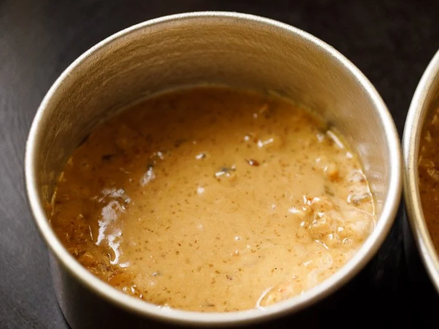

Fruit Cake Recipe | Traditional Christmas Cake
Festive and flavorful homemade Eggless Fruit Cake is bursting with cheerful holiday spices and delicious rum-soaked fruits and nuts. It’s a classic Christmas recipe that makes a light, crumbly, and perfectly moist Christmas Cake that you’ll love to enjoy and share all season. No eggs needed!
How to Make Eggless Fruit Cake
Prep & Soak Dry Fruits In Rum
1: In a large bowl combine the following nuts and dried fruits:
*¼ cup of golden raisins
*¼ cup black raisins (seedless)
*¼ cup cashews
*2 tablespoons of dried cherries
*8 apricots
*8 to 9 dates, small to medium-sized
Rinse them well and drain thoroughly.
2: Finely chop everything with a knife, or use a food processor to roughly chop.
3: Transfer the chopped dried fruits and nuts to a bowl.
4. Now add ¼ cup of tutti frutti and ¼ cup chopped candied orange peel.
You can skip these ingredients if you don’t have them. But candied orange peels, gives a lovely citrusy, bitter-sweet notes in the cake.
5: Pour in one cup of rum, wine, or apple juice. I have used rum.
6. Mix very well and let the dried fruits and nuts soak in the rum for at least 12 hours, or for 2 to 3 days. You can keep at room temperature for up to 3 days.
7. Here is what the mixture will look like after soaking for 3 days.
Prepare Spice Mix
8: The spice blend in this fruit cake smells and tastes just like the holidays.
9: Add the spices in a spice grinder or a small grinder jar.
10: Grind the spices to a fine powder, and set aside.
11. At this point you want to go ahead and prepare your Christmas cake pan. To do so grease a 7 to 8.5 inches round pan very well with a neutral oil.
Since this is a moist cake, you can also line the cake pan with butter paper or parchment paper.
Also preheat oven at 180 degrees Celsius (356 degrees Fahrenheit) for 20 minutes to get perfectly hot.
Sift Dry Ingredients
12: To make the batter, combine 1.5 cups of all-purpose flour and 1 cup of whole wheat flour in a sieve over a large bowl.
13: Then add the ground spice powder and ½ teaspoon of baking powder.
14: Sift the ingredients together into the bowl.
Make Fruit Cake Batter
15: Next add the soaked dried fruits and nuts – including the leftover rum – to the sifted dry ingredients.
16: Add 1.5 cups of demerara sugar. You can also use powdered sugar, brown sugar, raw sugar, palm or coconut sugar – whatever you prefer!
17: Then add 1 cup of oil and 1 teaspoon of vanilla extract.
18: Gently mix together the ingredients until just combined, making sure to not over-mix.
19: Next, in the same bowl in which dried fruits and nuts were soaked, add 1 cup of soy milk.
Feel free to use dairy milk – or almond milk, cashew milk, lite coconut milk, to make an eggless fruitcake that’s also vegan-friendly.
20: Add 2 tablespoons of apple cider vinegar (or white vinegar) to the milk.
21: Mix well. Do not worry if the milk curdles a bit.
22: Now sprinkle 1 teaspoon of baking soda all over the milk.
23: Stir gently. The mixture will rise a bit.
24: Pour this milk mixture into the fruit cake batter.
25: Working quickly, use a spatula to combine the mixtures together.
26: It should form a wet batter that is smooth except for the lumps of dried fruits and nuts.
27: Pour the eggless fruit cake batter into the greased pan.
28: Give the pan a gentle shake and tap to level out the batter, using a spatula if necessary to even the top of the cake.
29: As you do not want the batter to reach the very top of the pan, you might need a second pan, like I used here. This is like an extra mini cake for you to enjoy!
Bake Traditional Christmas Cake
30: Now bake the fruit cake in a preheated oven for 50 minutes to 1 hour, depending on oven size.
31: The eggless fruit cake will have a beautiful golden brown color. Test the doneness by inserting a toothpick into the center – it should come out clean.
Allow the cake pan to cool completely on a wired rack or stand before flipping the cake out onto a plate.